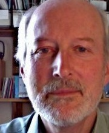
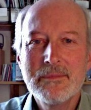
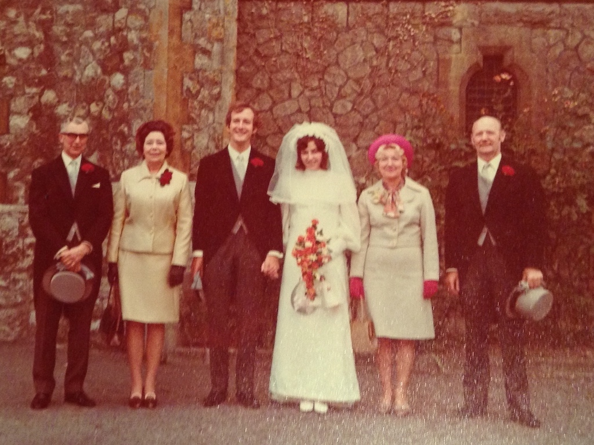

My Family
I've tried to collect what little we know about our family on our web site, although there is still a lot to find out, particularly about my grandparents. A small part of our combined family tree is reproduced here, just to show my immediate connections and to put any other comments into context. I've put down those comments really just as I've thought of them, without any particular plan.


Married 6th February 1943
James Edward James (1923 - )
Eileen May James (nee Ludlam) (1921 - 2012)
 


Married 5th August 1972
Angela Mary James (nee Hinxman) (1948 - )
David Edward James (1948 - )
Alan Robert James (1953 - )


Married 13th January 2007

Married 13th November 2010
Brandon Hurr (1978 - )
Victoria Ann Hurr (nee James) (1976 - )
Paul William James (1979 - )
Krista James
(nee van der Voorden) (1979 - )


Austin Miles Hurr (2012 - )
Juniper Autumn Hurr (2015 - )
Rowan Olive James (2012 - )
Throughout my life I've strived (but failed) to work as hard as my Father. When we were growing up, right through to when he was looking after Mum, supporting his family was his priority and he worked physically hard to do it. On the occasion when he was made redundant he obtained another job the next day. And it wasn't just when he had a family to support, although that became his main motivation, since even his childhood seemed to be full of doing odd jobs so as to earn money, most of which was given to his mother. When I 'interviewed' him to find out more about his life it became evident that he'd had more jobs than most people have hot dinners. Basically he would turn his hand to anything that gave him some income.
My first recollection of his job was when he was working for Tom Welsh as a driver cum manual labourer. Tom had contracts with various transport organisations to buy their old lorry tyres. Tom and Dad would collect them from the various sites around the country, sort the tyres into those that could be re-cut (have a new tread cut into the remaining rubber), re-moulded (have a new layer of rubber moulded onto the tyre carcass) or were scrap. Each category then got sold on. Tom seemed quite generous and Dad would often come home with fruit or meat that Tom had bought. However, when Tom died, the business was taken over by his son Den, who didn't seem to have quite the same business sense. After a while he stopped that trade and opened a 'shop', in a back street in Tottenham, selling and fitting car tyres. Business wasn't good (they had no passing trade) and it was Den who made Dad redundant.
During our childhood, at least while we lived in Potters Bar, Mum would have a part-time job, usually in some kind of assembly or light engineering firm. To them both, work was what life was about. Education was important (they had both left school at 14), but their expectation was that their children would leave school as soon as they could and find a job. Having said that, they left the decision as to whether or not I wanted to stay on at school to me. At that time you could leave school at 16, after taking GCE or RSA exams, and they supported my choice. They had no experience of people staying in education and did not have the background to be able to provide any 'academic' support. However, Mum was quite a fervent knitter. We certainly were never without a sweater or cardigan!
Mum would read 'magazines', Dad would read a newspaper and I was allowed a weekly comic, but there were no books around the house apart from a set of encyclopaedias. These were bought from Mum's cousin, who worked for the publisher. The set of eight books had one page where half the page was over printed, so we got them cheap. I had always been a poor reader and am slow to this day. I suspect that not reading much was the cause of my poor spelling. It wasn't until I was about 14 that I joined the public library.
Alan was born while we lived in Cheshunt and was five and a half years my junior. This really meant that we had little in common during our childhood. It wasn't until I left home for university that Alan was reaching an age where we could have overlapping interests. He married Chris a couple of years after our marriage, but we have always lived some distance apart and so only make occasional visits.
I'm not very good at keeping in touch with people; a yearly update to people at Christmas is about all I manage. However, in the early years after university I must have kept in touch with Dick in some way or perhaps he kept in touch with me. Dick had met Kate, a nurse, and they were to marry. Since Dick's brother lived in Canada he asked me to be Best Man and invited me to dinner on Saturday 10th April at Kate's flat in North London. They also invited Angela, a school friend of Kate and who was to be Bridesmaid. Angela was a teacher and was working in Lichfield. I invited Angela to a party we were due to hold on Saturday 1st May in Derby (about 45 minutes drive from Litchfield) and she came. One thing led to another. I met her parents on Sunday 11th July and on August 19th went off on holiday to Greece for three and a half weeks. Angela came to the station to say goodbye. Then on Friday 24th September we went off camping in North Wales for the weekend. It rained, so we spent Friday night in a B&B. On the Sunday I proposed. I think we were sitting in the front of my Ford Escort in a lay-by in the Llanberis Pass, in the rain, but Angela's first reaction was "I don't know"! She did then say yes. It was Friday 15th October when I told Angela's parents and then mine on the Sunday. We found an engagement ring in Tottenham on the Monday.
So on August 5th 1972 we were married at the Methodist Church in Chislehurst, Kent. My Mother pretty much always got her own way and in that respect Angela's parents were similar. Her mother was the dominant partner and organised our wedding. We just turned up. Otherwise our parents were poles apart. Angela's mother was a teacher and her father a quantity surveyor who had moved into being a 'special' clients interface to the construction firm for which he worked, mainly for clients in the City of London.
After the wedding reception at a pub in Chislehurst (the Bulls Head I think) we drove off in Angela's light blue mini (3035 PL). We stayed overnight in a small hotel around Stoney Stratford before heading for the Lake District.
We were still living in a rented house in Woolston, just outside Warington, before we moved into Highfield Road in Lymm, when we decided that we would start trying for a family. This was in October 1975 and on Saturday 11th December 1976, at five to three in the afternoon, Victoria was born. She weighed 6lb 7½oz. It was then two and a half years later, on Friday 30th March that we were awake at 2am and at the hospital by 4:30. Paul weighed in at 8lb 1oz at 9:25. At the hospital there was another 'expectant' father who looked like a boxer, with a broken nose and a bent ear. If I'd not seen Paul being born I would have assumed that the boxer was his father! However, he soon recovered.
We had a very cautious GP and both Victoria and Paul, when they had a high temperature, were rushed into Warrington hospital in case they had meningitis. It was very distressing to see Victoria, at just over a year old, sitting up all alone in an otherwise bare cot. Luckily both were soon discharged.
While the children were young we would make an annual trip south. With my parents living in Potters Bar, to the north of London and Angela's parents living in Chislehurst, to the south of London, we would firstly travel to one and then move to the other on Boxing Day. With limited space in both houses at least one of the children would sleep in a 'nest' on the floor, which was all part of the fun.
When Dad retired they decided to follow us to Cheshire and then in 1990 to Sussex when we moved south. In 2003 Angela's dad died (he had Alzheimer's for a while) and then, a few years later, her mother came to live with us in Bramber until just before her death in 2011 at the age of 100. The year before she died her sister, Bay, moved from Leigh-on-Sea in Essex to Steyning. She had no children and so Angela was her nearest relative. She lived in Steyning until her death in 2018 at the age of 102. For some time, after my Mother's death in 2012, we would do a weekly shop for both Bay and my Dad. Although we didn't mind, it sometimes seemed that our routine revolved around them.
We persuaded Dad to go into a rest home for three weeks in October/November 2017 while we visited Victoria in California. He was very reluctant to go, but when we got back he asked if he could afford to move there permanently! He had realised just how lonely he was living on his own. So in December he moved into Victoria Grand in West Worthing. He'd used a small room during his three-week stay, but now had a much larger room. That left Alan, Chris, Angela and I to clear his house and put it up for sale. Almost immediately he had no interest in his old house or the contents. He had quite a lot of photos and some of his paintings on the wall of his room, but seemed happy with just his memories. His long-term memory was still working, even if the order of things got slightly mixed up, but his short-term memory got progressively worse.
After obtaining her PhD from the John Innes Centre in Norwich, Victoria went to the University of Florida as a Post Doctoral Fellow. She had offers from both Florida and Manchester, but for some reason seemed to find it difficult to decide which to take! While in Florida she met Brandon, who was still working on his PhD at the time. Brandon comes from Kansas City in Missouri, but they decided to get married in Florida. So in January 2007 they had a small ceremony on the university campus, with just close family and a few friends, followed by a meal in a room behind a coffee shop!
They invited only their parents, siblings (with partners and children) best man and bridesmaid (with husband) to the event. They then held family parties in Missouri and Sussex later in the year.
When Brandon graduated he got a job with a seed development company in the UK, so they moved to a small village just outside Bracknell. Victoria got a job as a copy editor for a scientific journal. However, in June 2014 they all moved to California. Brandon's firm moved him to their site in Northern California and, after a short time in a rented apartment, they bought a house in Davis. In some ways Davis is a typical US town (streets on a grid), but in others very different (cycle lanes everywhere and London double decker busses). By this time Victoria was working freelance as an editor and so could continue the work from home.
Meanwhile, Paul met Krista while he was working in Manchester. She is Dutch and was over in the UK visiting her friend, who was working at the same company and sharing a house with Paul and a couple of others. Eight years later and after touring Australia and New Zealand together they got married in Richmond in November 2010. Initially they lived in Paul's flat in Colliers Wood, but then bought a maisonette in Twickenham, renting out the flat. Then in September 2014 they moved to the Netherlands. Paul had got a job in Rotterdam and they rented a flat in the town where Krista's parents live. Then in April 2015 they bought a small cottage with a large barn attached, basically in the middle of nowhere. They had the cottage renovated and moved into it while they had the barn converted, moving into the barn in October 2016. Paul cycles to Goude and then gets the train into Rotterdam. His office is directly opposite the station. Meanwhile, Krista rents out the cottage, mainly to holiday makers.
While they were all living in the UK our first grandchildren were born. Victoria was forecast to give birth first, but Rowan was born to Krista three days before Victoria gave birth to Austin. This was in May 2012. That means that both Rowan and Austin are British, although Austin now has a US passport as well as his British one. In fact, Victoria also became a US citizen, so they all have two passports. I don't think either Krista or Victoria planned on having any more children, but in September 2015 Victoria gave birth to Juniper (who also has British and US passports). Both Austin and Juniper have strong American accents!
Of course, Rowan has now become bi-lingual, simply because her schooling, friends and local grandparents are all Dutch. You would think that this would not be available in the US, but Austin attends a Spanish school, where everything is taught in Spanish. So by the time that he goes to high school he should also be bi-lingual.
Apart from fairly regular visits (us to them and vice versa) our primary contact with our children and grandchildren is via a weekly FaceTime call. California is eight hours behind us, so our afternoon tea time is their breakfast time, whereas the Netherlands is an hour ahead. It does mean, however, that we now have no one in the UK apart from my father. Therefore we need to plan for the time when we need support. At the moment we are just ensuring that we have enough savings to cover potential care costs.